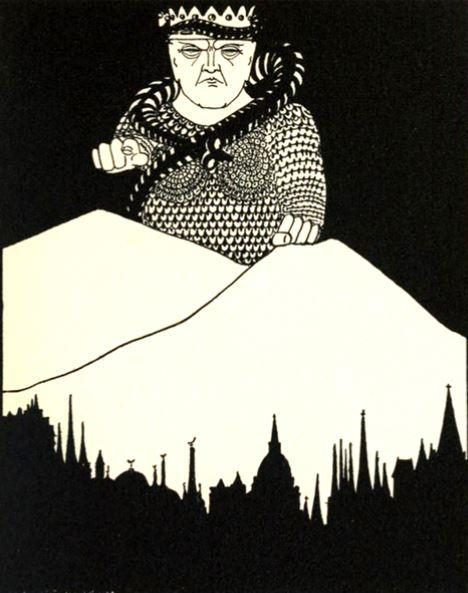
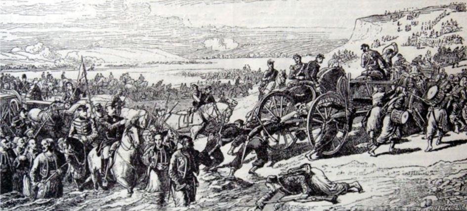

Pour entrer directement dans le cœur du sujet, j’irai au fait et je dirai que si l’on ne prend pas conscience que la guerre en cours contre la Russie aujourd’hui est la même guerre que l’oligarchie anglo-saxonne a mené depuis l’époque élisabéthaine contre l’Espagne et le Portugal, puis contre la Hollande, puis contre la France, définitivement vaincue à Waterloo, puis contre l’Autriche-Hongrie vaincue en 1918 et enfin contre l’Allemagne vaincue en 1945, on ne peut comprendre intimement aucun des grands événements qui se sont déroulés sur le continent européen depuis la fin de la seconde guerre mondiale. Tous ces peuples européens ont courbé la tête et leurs élites sont passées sous les fourches caudines de la City, aujourd’hui renforcée par Wall Street.
Dans cette lecture rapide de l’histoire de l’Europe des 5 derniers siècles, force est de constater qu’il ne reste qu’un peuple sur le continent eurasiatique qui n’a jamais été vaincu définitivement par les puissances anglo-saxonnes et c’est le peuple russe. Voilà pourquoi ce que les Anglais ont appelé « Le Grand jeu » continue et il continuera jusqu’à ce que la Russie s’incline à son tour ou jusqu’à ce que Mammon tombe de son piédestal.
Si l’on ne rentre pas dans cette logique, on ne peut rien comprendre à la chute du mur de Berlin en 1989, ni aux sécessions programmées des pays baltes, de la Biélorussie, de l’Ukraine et des régions d’Asie centrale ni aux révolutions de couleur en Yougoslavie ni à celle de Géorgie en 2008, ni bien sûr à la crise ukrainienne que nous connaissons aujourd’hui.
LA CRISE UKRAINIENNE
Dans une première analyse, on pourrait dire que la cause première de la guerre résulte de la chute du Président Viktor Yanoukovitch à la suite des manifestations de Maïdan qui a conduit à la mise en place d’un régime néo-bandériste à la solde de l’occident. Puis de manière concertée et volontariste, ce régime manipulé et tenu à bout de bras par le FMI, les USA et la Commission européenne, a créé délibérément les conditions d’une sécession dans l’est de l’Ukraine, comme si on avait voulu créer un abcès purulent aux frontières de la Russie.
Première question : l’agression contre la Russie en Ukraine est-elle une mesure de rétorsion consécutive aux défaites successives subies par les terroristes islamistes manipulés par l’occident sur le front syrien depuis l’intervention russe à l’automne 2015 ? Peut-être, sans doute même, mais cela n’a pas une grande importance dans l’analyse des causes profondes de cette guerre, car ceux qui font la guerre à la Russie aujourd’hui, je ne parle pas des marionnettes de Kiev bien entendu, la font depuis très longtemps et ils n’ont pas besoin d’un prétexte aussi futile qu’une défaite marginale au Moyen-Orient pour poursuivre inexorablement le but qu’ils poursuivent depuis des siècles. Nous reviendrons sur cet aspect en détail un peu plus loin.
Alors remontons plus avant dans l’analyse des causes de cette guerre. Le magazine russe Zavtra a publié le 15 mars 2015 le compte rendu d’une table ronde organisée autour de la situation actuelle en Russie et en Ukraine, de ses causes et de son impact pour l’avenir. Alexander Nagorny, Secrétaire exécutif du club d’Izborsk implique la perestroïka de Gobatchev dans la genèse de la guerre civile en Ukraine. Il a parfaitement raison d’intégrer cette période de l’histoire russe comme une des causes de la situation de crise qui existe aujourd’hui dans le Donbass, mais à la condition de ne pas oublier d’analyser la pérestroïka et la glasnost gorbatchévienne pour ce qu’elles étaient, à savoir des mesures de déstabilisation et de réorientation politique suscitées par l’occident.
Si l’on se refuse à admettre cette hypothèse, on ne peut rien comprendre aux conditions de la dislocation du régime soviétique et au pillage généralisé qui a suivi durant l’ère Eltsine.
Si l’on remonte encore plus loin dans le temps, on peut considérer que le financement pendant la première guerre mondiale de Trotsky par la City et certaines banques new-yorkaises d’une part et de Lénine par l’Allemagne de Guillaume II d’autre part, afin de renverser la dynastie des Romanov et d’établir un régime totalitaire et spécifiquement antichrétien constituent là encore, une cause ancienne mais probable de la guerre en Ukraine.
Et enfin, si l’on remonte encore un peu le fleuve de l’histoire, on peut considérer que la guerre de Crimée de 1853 s’inscrit aussi dans la même logique, avec les mêmes motivations, que la guerre d’Ukraine qui se déroule actuellement dans le bassin du Don. Que peut-on retenir de significatif dans cette guerre de Crimée menée au XIXème siècle, au-delà du prétexte fallacieux de la question des lieux saints de Jérusalem et du contrôle de la mer Noire pour lequel la France n’avait aucun intérêt stratégique ni même commercial ? Qu’il s’agit là de la première guerre que la France fit au service exclusif des intérêts anglo-saxons, car depuis Waterloo, une grande partie des élites françaises, aristocratie et bourgeoisie confondues, se sont progressivement détournées de l’intérêt national pour servir la cause du maître dominant de l’époque, hier Londres et aujourd’hui Washington.
D’une manière différente, mais toujours en poursuivant le même but, la finance anglo-saxonne, après avoir soutenu l’émergence du nazisme en Allemagne comme elle avait soutenu la révolution bolchevique en Russie, est parvenue à l’un de ses buts en brisant les reins de la puissance germanique, et là encore en amenant les élites allemandes à Canossa, à réduire un autre grand peuple européen au servage idéologique et à le priver de sa souveraineté.
Autrement dit, et pour résumer mon propos, depuis la fin du XVIème siècle au moins, l’oligarchie anglaise, c’est-à-dire aristocratie et finance réunies, a conçu le projet de dominer le monde par tous les moyens, y compris légaux : la guerre, le vol, la corruption, la subversion, le boycott, le blocus, les sanctions économiques, l’assassinat, le chantage, la désinformation… La liste n’est pas exhaustive.
Lorsque certains historiens qualifient de volonté d’équilibre entre grandes puissances la politique de Londres depuis Henry VIII jusqu’à la première guerre mondiale, ils n’ont que partiellement raison. Derrière le jeu des alliances successives avec l’Autriche, la Prusse, la Russie, la France, la Suède ou d’autres, se dessinait toujours la volonté de faire tomber l’une après l’autre toutes les puissances qui dominaient le continent européen et qui pouvaient compromettre le grand projet thalassocratique. D’abord il fallut briser l’empire de Charles Quint et sa suprématie maritime dans le commerce des Amériques, puis briser la puissance française qui domina l’Europe de la fin du XVIIème siècle jusqu’à Waterloo.
Puis il fallut à l’oligarchie anglo-saxonne deux guerres mondiales pour réduire à néant la puissance germanique en mobilisant pour cela toutes les énergies des nations qu’elle avait subjuguées. Pour abattre la puissance allemande, il était vital dans le plan des anglo-saxons que l’URSS s’oppose à l’Allemagne nazie et que ces deux géants de la scène européenne s’affrontent et s’épuisent dans une lutte mortelle ce qui advint. Cet éclairage permet avec le recul de mieux comprendre l’intelligence politique du pacte Molotov-Ribbentrop dont Hitler et les dirigeants nazis n’ont pas compris la réelle portée, ainsi que l’a montré l’expédition à Londres que fit Rudolf Hess en 1941.
ALORS AUJOURD’HUI OÙ EN EST-ON ?
L’oligarchie anglo-saxonne a gagné la guerre idéologique puisque depuis la fin de l’Union soviétique aucune puissance dans le monde n’offre d’alternative à son discours libéral et libertaire. Or, il s’agit d’une lutte à mort dont l’enjeu, le Grand Enjeu, est la domination mondiale, ce dont les néo-conservateurs américains ne se cachent même plus. Le monde unipolaire qu’ils souhaitent instaurer est celui que George Orwell dénonçait dans son roman 1984. Ces gens-là rêvent d’une humanité réduite en esclavage et dont ils seront les maîtres tous puissants.
La dernière forteresse qu’il leur reste à conquérir se trouve sur les rives de la Moskova. Et la guerre qu’ils feront, qu’ils font, pour conquérir le Kremlin est une guerre totale : Idéologique, culturelle, religieuse, économique, technologique et bien sûr militaire.
Ils se serviront des centaines d’organisations non-gouvernementales comme celles de Monsieur Soros et de ses amis, ils appliqueront la politique des sanctions, ils achèteront les esprits et les âmes et ils donneront leurs directives aux agents de la 5ème colonne afin de saboter et d’affaiblir la puissance slave. Ils paieront des Femen, des Pussy Riot ou des Navalny pour salir et faire tomber la Sainte Russie.
Face à cette volonté de conquête de la part du monde anglo-saxon et de son oligarchie financière, face à des êtres pour qui la Russie traditionnelle représente tout ce qu’ils haïssent et qu’ils veulent voir disparaître, les Russes ne peuvent se contenter de contester leurs mensonges à la tribune de l’ONU. La responsabilité de la Russie aujourd’hui est historique et l’enjeu va bien au-delà d’une Sainte Alliance telle que celle dont rêvait le Tsar Alexandre 1er, car si la Russie tombe demain, c’est toute l’humanité qui tombera avec elle sous la férule du monde abject de l’argent.
En conclusion, je dirais que le courage et la volonté ne suffiront pas pour gagner cette guerre. Cette fois-ci, il ne faudra pas compter sur le général Hiver pour l’emporter. Car l’arme principale utilisée par nos ennemis est l’arme culturelle et les batailles qu’ils sont en train de livrer se déroulent déjà depuis un quart de siècle de Pskov à Vladivostok. Le cinéma, la musique, les concerts de rock, la peinture, le théâtre, la littérature, l’enseignement, les médias, Internet, tous ces vecteurs sont utilisés pour transformer l’âme du peuple russe et le subvertir, comme ils sont toujours utilisés en occident pour maintenir les populations dans l’adoration de leurs maîtres et des régimes pseudo démocratiques qu’ils nous ont imposés.
Il découle de cela que le pragmatisme et le bon sens utilisés comme moyens de défense en réplique aux attaques que la Russie subit de manière croissante ne sont pas des armes suffisantes face à l’hégémonie idéologique et culturelle de notre adversaire commun. Contre l’idéologie des droits de l’homme et du libre marché il faut opposer une vision du monde alternative qui démontre la nocivité des buts poursuivis par l’oligarchie anglo-saxonne. Pour contrer cette idéologie mortifère qui se sert de l’individualisme pour tuer les peuples et les asservir, il faut promouvoir la liberté des peuples et la pluralité des cultures contre le totalitarisme rampant de l’hégémon anglo-saxon. Le conservatisme et le patriotisme sont sans doute des armes qu’il faudra utiliser, mais je ne suis pas certain qu’elles seront suffisantes pour l’emporter. C’est une guerre de religion que mène le Système et l’un de ses buts primordiaux est d’achever l’éradication de la religion chrétienne sur le continent européen. Et la Russie est l’un des lieux où renaît cette foi. Voilà un crime impardonnable.
Partager cette page